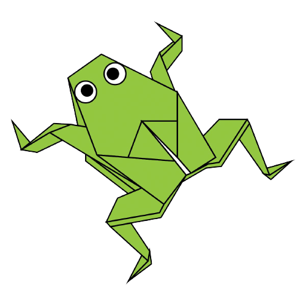
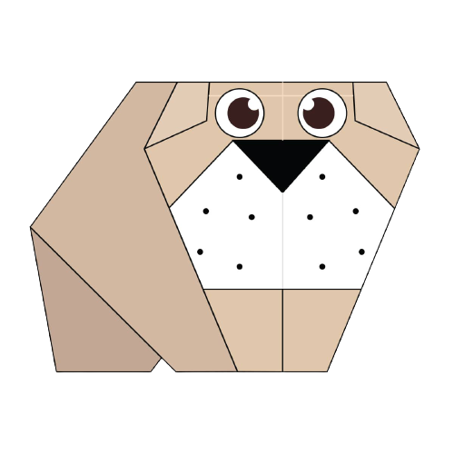
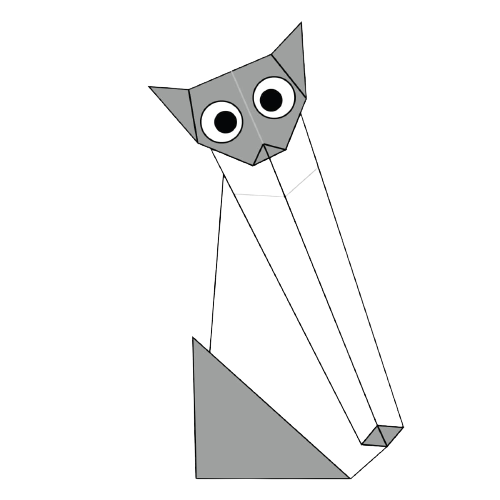

How to make a camel:

Interesting Facts about Camels:
- Camels have three sets of eyelids and two rows of eyelashes to prevent sand entering their eyes.
- Camels have thick lips which let they bite on plants that have throns, for example cactus.
- There are such things as three-humped camels... and have been thought to exist due to global warming.
How to make a chameleon:

Interesting Facts about Chameleons:
- Chameleons have eyes at the back of their heads.
- Their eyes can rotate and focus seperately on 180-degree arcs.
- Chameleons have extremely powerful tongues.
How to make a pigeon:

Interesting Facts about Pigeons:
- Pigeons can fly at an altitude of 6000 feet.
- They can move their wings ten times per second and maintain heartbeats at the rate of 600 times per minute, during a period of 16 hours.
- The fastest known pigeon managed to fuly at a speed of 92 miles per hour.
How to make a teddy bear:

Interesting Facts about teddy bears:
- The first stuffed teddy bear was created Maragarate Steiff, who was a German toymaker.
- The smallest stiched teddy bear is approximately 0.29 inches tall.
- The official term for teddy bear is 'arctophile'.
How to make a panda:

Interesting Facts about Pandas:
- Giant pandas are good at climbing tees and can also swim
- An adult panda can eat 12-38 kgs of bamboo per day.
- Pandas are usually born in August because their mating months are between March and May.
How to make a flying cicada:

Interesting Facts about Flying Cicada:
- Cicadas shed their skin.
- Cicadas live approximately for 17 years, by feeding off just tree roots.
- They lay many eggs.
How to make a frog:
Interesting Facts about Frogs
- Frogs can lay up to 4,000 eggs
- Frogs have long back legs and webbed feet for jumping and swimming
- Some frogs can jump up to 20 times their own body length in a single leap
How to make a bulldog:
Interesting Facts about Bulldogs
- Bulldogs are brachycephalic because they have short heads and snouts.
- Bulldogs are fourth most popular AKC dog bread.
- Bulldogs are also known as English Bulldogs as well as British Bulldogs.
How to make a cat:
Interesting Facts about Cats
- Cats have an average of 244 bones.
- Adult cats have 30 teeth, while kittens have 26.
- Cats can jump 5 times their height.